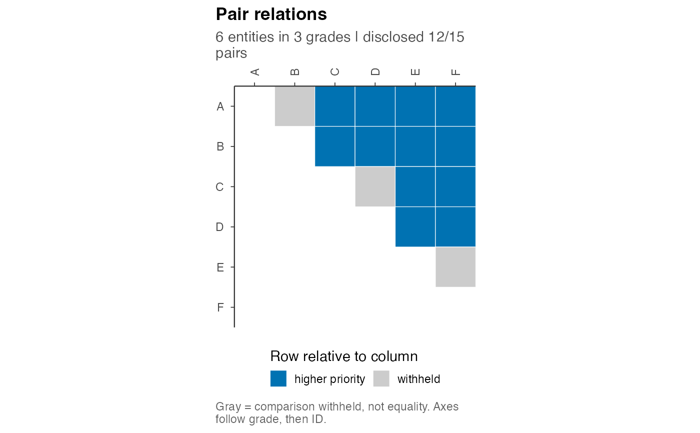
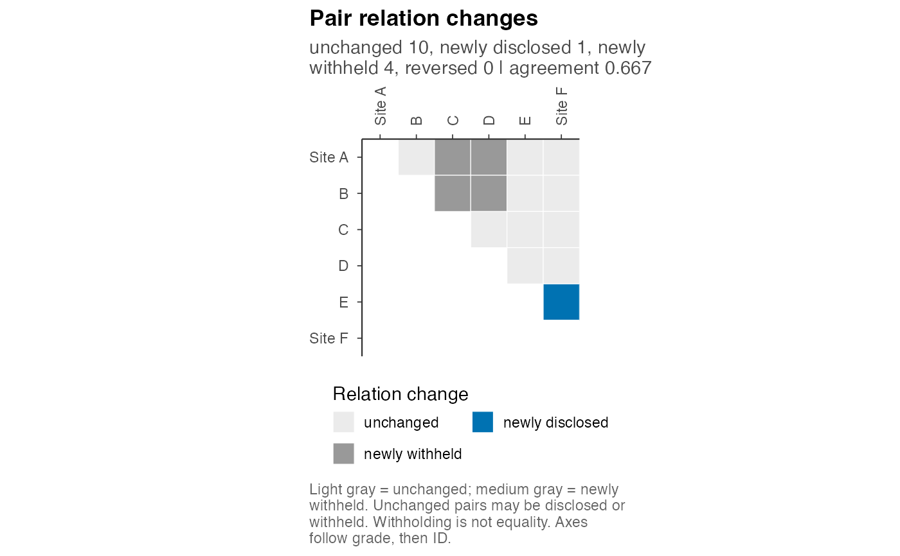

Plot Disclosed Pair Relations or Their Changes
postrank_plot_relations.Rdpostrank_plot_relations() draws an upper-triangular matrix showing whether
each unordered entity pair is ordered (above or below) or left in the
same grade (withheld), or how those pair relations change from one grading
x to a second grading y. Tiles show chosen grading decisions rather than
posterior comparison probabilities; use postrank_plot_pairwise() to view
directional-error probabilities.
Usage
postrank_plot_relations(
x,
y = NULL,
labels = c("auto", "ids", "none"),
...,
entity_labels = NULL
)Arguments
- x
A
postrank_fit,postrank_analysis,postrank_baseline, or a named integer/numeric vector of grades (1= highest priority).- y
Optional second
postrank_fit,postrank_analysis,postrank_baseline, or named grade vector grading the exact same set of entity IDs asx. Relation changes are classified fromxtoy.- labels
Axis label mode:
"auto"(the default) shows entity IDs (orentity_labels) when there are at most 15 entities and every display label has at most 20 characters, and otherwise shows integer positions in grade order;"ids"always shows display labels (wrapped at 18 characters on axes);"none"hides ticks and axis labels.- ...
Unused; unnamed extra arguments are ignored. Pass
entity_labelsby name.- entity_labels
Optional named character vector mapping raw entity IDs to display names. Unmapped IDs keep their raw IDs. Labels affect tick text only and never alter axis order or
$data.
Value
A ggplot object whose $data table has one row per unordered pair
(entity_i, entity_j, i_pos, j_pos, code, relation, plus
change when y is supplied). If x or y is a fitted object without a
checked grading, returns an empty status ggplot stating which object has
no grades.
Details
Both axes order entities by x's grade (1 first) and then raw entity ID
(radix order), with the horizontal axis along the top and the vertical axis
reversed so every unordered pair appears once in the upper triangle. In a
single-grading plot, gray tiles mark pairs left in the same grade
(withheld), which withholds ordering without asserting equal targets.
When y is supplied, each pair is classified as "unchanged",
"newly disclosed", "newly withheld", or "reversed". "unchanged"
(light gray) covers both pairs ordered in the same direction by x and y
and pairs withheld by both; "newly withheld" is medium gray. The subtitle
reports category counts and overall agreement (unchanged / M, over all
M = choose(n, 2) unordered pairs). Relation changes describe how two
gradings differ on pairs, not which grading has lower risk; use
postrank_compare() to evaluate rules under one shared loss.
Examples
one <- postrank_example("tutorial_one")
postrank_plot_relations(one)

Open full-size figure
two <- postrank_example("tutorial_two")
postrank_plot_relations(
one,
two,
labels = "ids",
entity_labels = c(A = "Site A", F = "Site F")
)

Open full-size figure